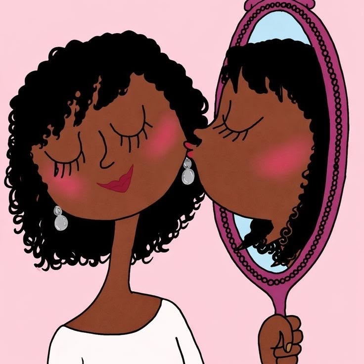

Mais de Duas Décadas de Tradição, Técnica e Acolhimento
Conheça a história da Realize Perucas: uma empresa familiar fundada em 1998, guiada pelo compromisso de transformar vidas através de soluções capilares artesanais de altíssimo padrão.
Uma Marca Construída com Dedicação, Família e Conhecimento Técnico
A Realize Perucas nasceu com o propósito de suprir uma carência histórica no mercado: a ausência de um atendimento verdadeiramente humano, técnico e acolhedor para pessoas que necessitam de soluções capilares.
Sob a condução próxima e dedicada das proprietárias Taluana, Daniela e Victoria, a Realize uniu o conhecimento artesanal tradicional com o que há de mais moderno na indústria mundial de próteses, perucas humanas, front laces e megahair.
Ao longo de mais de 25 anos, atendemos milhares de clientes — desde quem busca versatilidade estética e praticidade diária até mulheres em momentos sensíveis de recuperação oncológica ou alopecia, sempre com absoluto sigilo, empatia e carinho.

25 Anos de Aperfeiçoamento Contínuo
Uma história pautada no respeito às nossas clientes e na constante busca pelas melhores tecnologias capilares.
Fundação da Realize Perucas em São Paulo
Início das atividades no bairro da Liberdade, especializando-se na seleção criteriosa de fios humanos virgens e confecção de perucas sob medida com acabamento manual.
Pioneirismo em Alongamentos e Próteses Médicas
Incorporação de novas técnicas de mega hair com distribuição balanceada de peso e acolhimento dedicado a pacientes em tratamentos médicos delicados.
Especialização em Laces HD de Alta Definição
Adoção da renda suíça ultrafina de alta definição (HD), desenvolvimento de técnicas de nós invisíveis e personalização de baby hairs com naturalidade absoluta.
Nova Presença Digital & Reconhecimento Consolidado
Modernização da experiência digital da Realize, facilitando o agendamento direto pelo WhatsApp e mantendo viva a tradição e o calor humano que construíram nossa marca.
Os Valores que Guiam Cada Atendimento
1. Rigor Técnico
Nenhuma peça sai do nosso ateliê sem passar pela verificação minuciosa de caimento, densidade e acabamento frontal.
2. Empatia & Sigilo
Respeitamos a privacidade e a individualidade de cada cliente, proporcionando um ambiente acolhedor e livre de pressões.
3. Fios Selecionados
Trabalhamos exclusivamente com cabelos humanos de procedência ética e fibras premium com resistência térmica comprovada.
4. Conforto Total
Você escolhe onde deseja ser atendida: no nosso espaço na Liberdade ou na tranquilidade da sua residência.
Visite Nosso Espaço na Liberdade
Rua Doutor Siqueira Campos, 265, Loja B - Liberdade — São Paulo/SP. Um ambiente aconchegante, discreto e preparado especialmente para você.